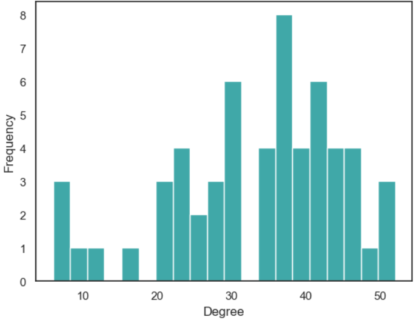

The degree distribution depicted in the above graph differs from the typical power-law distribution that is commonly observed in social networks. Instead, it exhibits a distinct pattern, characterized by a small hub of individuals with relatively few connections and a larger hub of individuals with more than 30 connections. The same pattern is also evident in the previous graph. So far, this network analysis has shown that the fraternity students are generally well connected, even though there is a small hub of relatively exlcuded individuals.